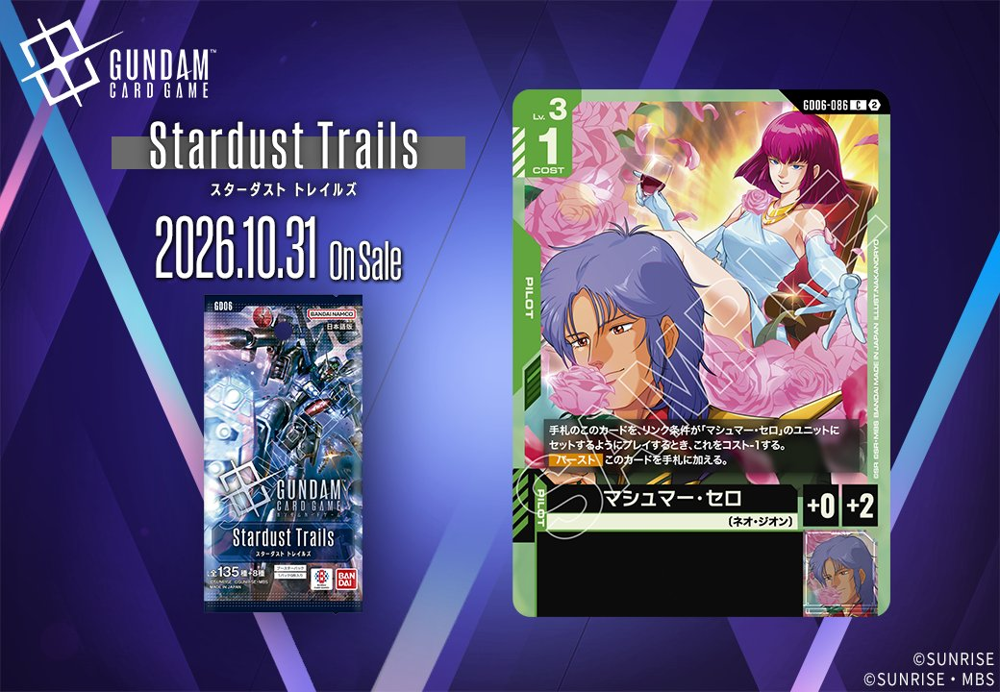
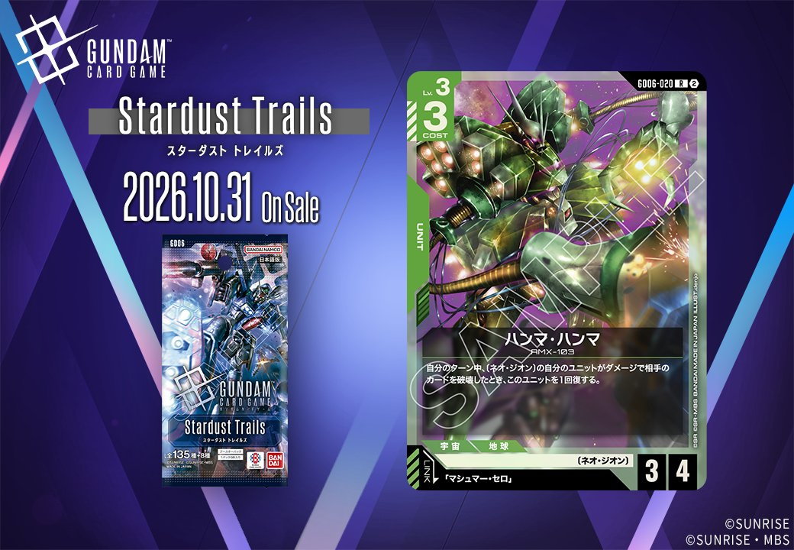
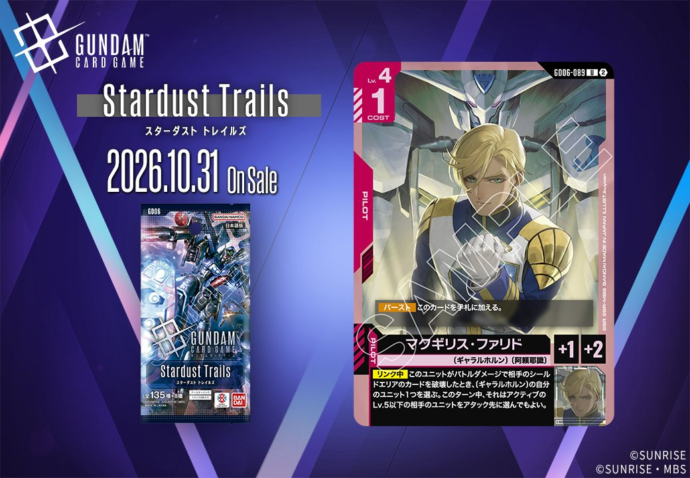
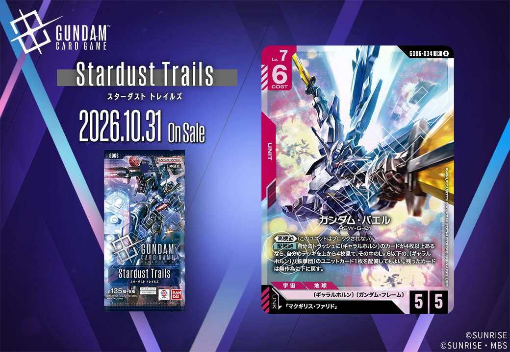
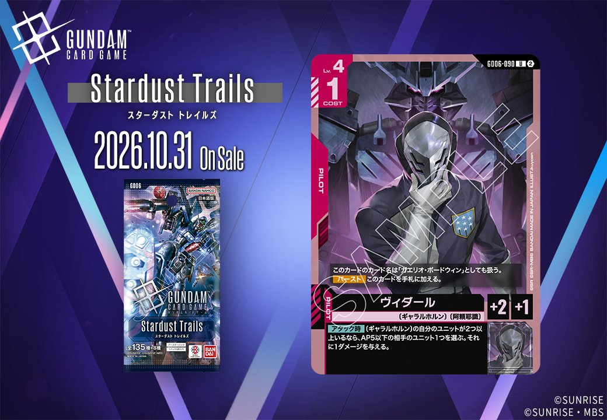
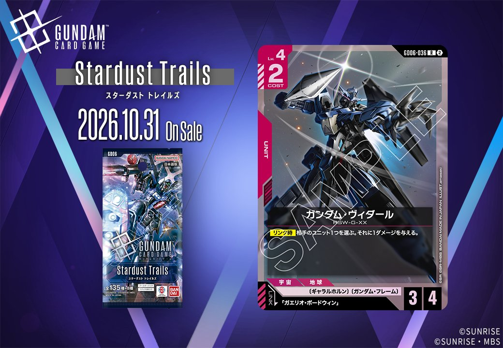
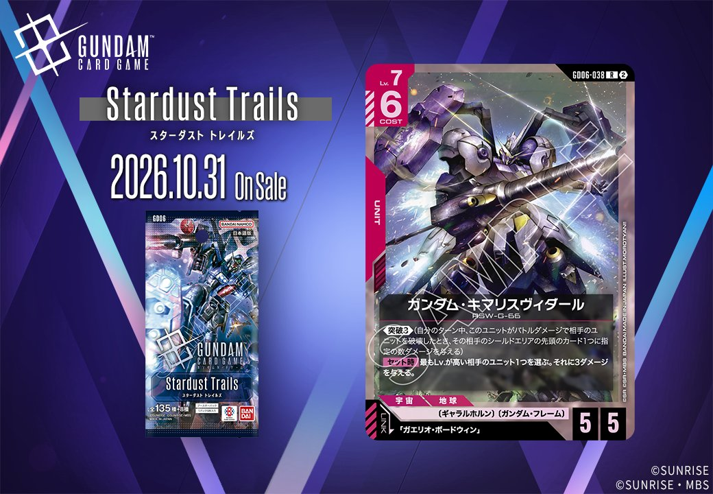

2026年10月31日発売のGD06「Stardust Trails」から、新カード4枚を紹介します。この4枚は、同日公開のUNITとPILOTがリンクで結ばれる2組の組合せです。一方は「マシュマー・セロ」をリンク条件に指定する緑のUNIT「ハンマ・ハンマ」(GD06-020)と緑のPILOT「マシュマー・セロ」(GD06-086)の組、もう一方は「マクギリス・ファリド」をリンク条件に指定する赤のUNIT「ガンダム・バエル」(GD06-034)と赤のPILOT「マクギリス・ファリド」(GD06-089)の組になっています。どちらの組もUNITとPILOTが同じ色のため、1色の中でリンク条件を満たす組合せをそろえられます。

マシュマー・セロ (GD06-086)
| 色 | 緑 | タイプ | PILOT |
| Lv | 3 | コスト | 1 |
| 補正 AP | 0 | 補正 HP | 2 |
| 特徴 | 〔ネオ・ジオン〕 | ||
| リンク条件 | 「マシュマー・セロ」 | ||
効果: 手札のこのカードを、リンク条件が「マシュマー・セロ」のユニットにセットするようにプレイするとき、これをコスト-1する。【バースト】このカードを手札に加える。
マシュマー・セロはLv.3のパイロットです。リンク条件が「マシュマー・セロ」のユニットにセットする形でプレイすると、コスト1が実質0になります。同日公開のハンマ・ハンマ(GD06-020)はこの条件を満たすため、追加コストなしでリンクを成立させられます。ハンマ・ハンマは、自分のターン中に〔ネオ・ジオン〕の自分のユニットがダメージで相手のカードを破壊すると1回復します。関連カードでは、キュベレイ(ST13-001)の「自分のユニットにパイロットをセットしたとき」という条件を0コストで満たせる点が噛み合うでしょう。ハマーン・カーンの【セット時】では、Lv.3以上のユニットにセットしたときに手札へ加える候補になります。【バースト】で手札に加わるため、シールドから出ても無駄になりません。

ハンマ・ハンマ (GD06-020)
| 色 | 緑 | タイプ | UNIT |
| Lv | 3 | コスト | 3 |
| AP | 3 | HP | 4 |
| 特徴 | 〔ネオ・ジオン〕 | ||
| リンク条件 | 「マシュマー・セロ」 | ||
効果: 自分のターン中、〔ネオ・ジオン〕の自分のユニットがダメージで相手のカードを破壊したとき、このユニットを1回復する。
ハンマ・ハンマは、Lv.3・コスト3でAP3/HP4のユニットです。自分のターン中に〔ネオ・ジオン〕の自分のユニットがダメージで相手のカードを破壊すると、このユニットが1回復します。発動の条件は自身のバトルに限られません。キュベレイMk-Ⅱ〈エルピー・プル専用〉など、ほかの〔ネオ・ジオン〕ユニットが相手ユニットを倒した場面でも回復できます。回復量は1なので、HP4を場に長く残すための補助と捉えるのが妥当でしょう。リンク先の「マシュマー・セロ」は、このユニットにセットするようにプレイするとコスト-1になり、【バースト】では手札に加わります。両カードとも【リンク時】の効果は持ちません。そのため、リンクの利点は軽いコストでパイロットを乗せられる点に絞られます。

マクギリス・ファリド (GD06-089)
| 色 | 赤 | タイプ | PILOT |
| Lv | 4 | コスト | 1 |
| 補正 AP | 1 | 補正 HP | 2 |
| 特徴 | 〔ギャラルホルン〕、〔阿頼耶識〕 | ||
効果: 【バースト】このカードを手札に加える。【リンク中】このユニットがバトルダメージで相手のシールドエリアのカードを破壊したとき、〔ギャラルホルン〕の自分のユニット1つを選ぶ。このターン中、それはアクティブのLv.5以下の相手のユニットをアタック先に選んでもよい。
「マクギリス・ファリド」はコスト1、AP1/HP2のパイロットです。【バースト】で手札に加わるため、シールドから出ても無駄になりません。【リンク中】の効果は、このユニットがバトルダメージで相手のシールドエリアのカードを破壊したとき、〔ギャラルホルン〕の自分のユニット1つが、このターン中、アクティブのLv.5以下の相手ユニットをアタック先に選べるようになるものです。リンク先の「ガンダム・バエル」は《高機動》によりブロックされないので、シールドへのダメージという条件を満たしやすい組合せになります。シールドを削った後に続く〔ギャラルホルン〕ユニットで相手のアクティブなユニットを狙えるため、攻めと盤面処理を同じターンに進められるでしょう。

ガンダム・バエル (GD06-034)
| 色 | 赤 | タイプ | UNIT |
| Lv | 7 | コスト | 6 |
| AP | 5 | HP | 5 |
| 特徴 | 〔ギャラルホルン〕、〔ガンダム・フレーム〕 | ||
| リンク条件 | 「マクギリス・ファリド」 | ||
効果: 《高機動》(このユニットはブロックされない)【配備時】自分のトラッシュに〔ギャラルホルン〕のカードが4枚以上あるなら、自分のデッキを上から4枚見て、その中のLv.6以下の〔ギャラルホルン〕〔鉄華団〕のユニットカード1枚を配備してもよい。残ったカードは無作為に下に戻す。
ガンダム・バエルはLv.7・コスト6、AP5/HP5のユニットで、《高機動》によりブロックされません。【配備時】はトラッシュに〔ギャラルホルン〕のカードが4枚以上あることが条件で、デッキの上4枚からLv.6以下の〔ギャラルホルン〕〔鉄華団〕のユニットカード1枚を配備できます。そのため、〔ギャラルホルン〕を多く採用する構築が前提になります。リンク先の「マクギリス・ファリド」は【リンク中】、バトルダメージで相手のシールドエリアのカードを破壊したとき、〔ギャラルホルン〕の自分のユニット1つがアクティブのLv.5以下の相手ユニットをアタック先に選べるようにします。ブロックされないこのユニットはこの条件を満たしやすく、相性は明確です。
関連カード
-
 キュベレイ(ST13-001)緑系デッキ内採用率0.2% (17デッキ)
キュベレイ(ST13-001)緑系デッキ内採用率0.2% (17デッキ) -
 ハマーン・カーン(ST13-011)緑系デッキ内採用率0.2% (16デッキ)
ハマーン・カーン(ST13-011)緑系デッキ内採用率0.2% (16デッキ) -
 エルピー・プル(GD06-084)NEW緑系 — 同色・共通特徴: ネオ・ジオン（新カード）
エルピー・プル(GD06-084)NEW緑系 — 同色・共通特徴: ネオ・ジオン（新カード） -
 キュベレイMk-Ⅱ〈エルピー・プル専用〉(GD06-018)NEW緑系 — 同色・共通特徴: ネオ・ジオン（新カード）
キュベレイMk-Ⅱ〈エルピー・プル専用〉(GD06-018)NEW緑系 — 同色・共通特徴: ネオ・ジオン（新カード） -
 キュベレイMk-Ⅱ(エルピー・プル専用)(GD06-029)NEW緑系 — 同色・共通特徴: ネオ・ジオン（新カード）
キュベレイMk-Ⅱ(エルピー・プル専用)(GD06-029)NEW緑系 — 同色・共通特徴: ネオ・ジオン（新カード） -
マシュマー・セロ(GD06-086)NEW緑系 — リンク先（新カード）
-

ヴィダール(GD06-090)NEW赤系 — 同色・共通特徴: ギャラルホルン、阿頼耶識（新カード） -

ガンダム・ヴィダール(GD06-036)NEW赤系 — 同色・共通特徴: ギャラルホルン（新カード） -

ガンダム・キマリスヴィダール(GD06-038)NEW赤系 — 同色・共通特徴: ギャラルホルン（新カード） -
マクギリス・ファリド(GD06-089)NEW赤系 — 同色・共通特徴: ギャラルホルン（新カード）